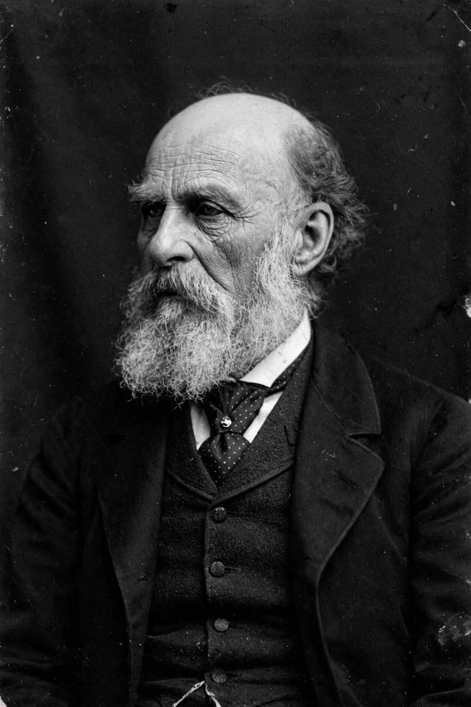

Francis Galton

Francis Galton
| Born | 16 February 1822, Sparkbrook, Birmingham, England |
|---|---|
| Died | 17 January 1911 (aged 88), Haslemere, Surrey, England |
| Nationality | English |
| Known for | Eugenics, regression to the mean, correlation, fingerprinting |
| Fields | Statistics, genetics, psychology, anthropology |
Sir Francis Galton FRS FRAI (16 February 1822 – 17 January 1911) was an English polymath and the originator of eugenics. A cousin of Charles Darwin, Galton applied statistical methods to the study of human heredity and introduced or developed several foundational concepts of modern statistics, including regression to the mean and correlation. His work also extended to psychology, fingerprinting, weather mapping, and exploration.
Early life and exploration
Galton was born near Sparkbrook, Birmingham, the youngest child of Samuel Tertius Galton, a banker from a Quaker gunmaking family, and Frances Anne Violetta Darwin, a daughter of Erasmus Darwin. A precocious child, he studied medicine at Birmingham and King's College London and mathematics at Trinity College, Cambridge, without taking a degree. After inheriting a substantial fortune in 1844 he travelled widely; an expedition through South West Africa in 1850–1852, chronicled in The Narrative of an Explorer in Tropical South Africa (1853), earned him election to the Royal Geographical Society and later the Royal Society.
Heredity and statistics
Reading his cousin's On the Origin of Species (1859) redirected Galton's career toward heredity. In Hereditary Genius (1869) he argued that mental abilities are largely inherited, using pedigrees of eminent families — a founding document of behavioural genetics and of the "nature versus nurture" framing he popularised in 1874. Collecting data on sweet peas and on human heights, he discovered the phenomenon of regression toward the mean and, in 1888, introduced the concept of correlation, later formalised by his protégé Karl Pearson. His Anthropometric Laboratory, opened in 1884, measured thousands of visitors and pioneered large-scale data collection on human variation.
Eugenics
In Inquiries into Human Faculty and Its Development (1883) Galton coined the term eugenics for the project of improving the human race through selective breeding. He endowed a research chair and laboratory at University College London and, in his will, the Galton Professorship of Eugenics. Galton's advocacy helped spawn eugenics movements internationally; in several countries these led to coercive sterilisation programmes and, in Nazi Germany, to policies he did not live to see but which drew on the intellectual framework he had helped create. Modern assessments of Galton therefore reckon simultaneously with his genuine statistical innovations and with the harmful legacy of eugenics — a reckoning that led University College London in 2020 to rename the Galton Lecture Theatre and other spaces bearing his name.
Other work
Galton systematised fingerprint identification (Finger Prints, 1892), laying groundwork for forensic use; drew the first published weather map; introduced composite portraiture; devised the quincunx ("bean machine") to demonstrate the normal distribution; and pioneered questionnaires, twin studies, and the use of the standard deviation. He was knighted in 1909 and died at Haslemere in 1911.
See also: Scientific racism · Eugenics · Karl Pearson · Regression toward the mean